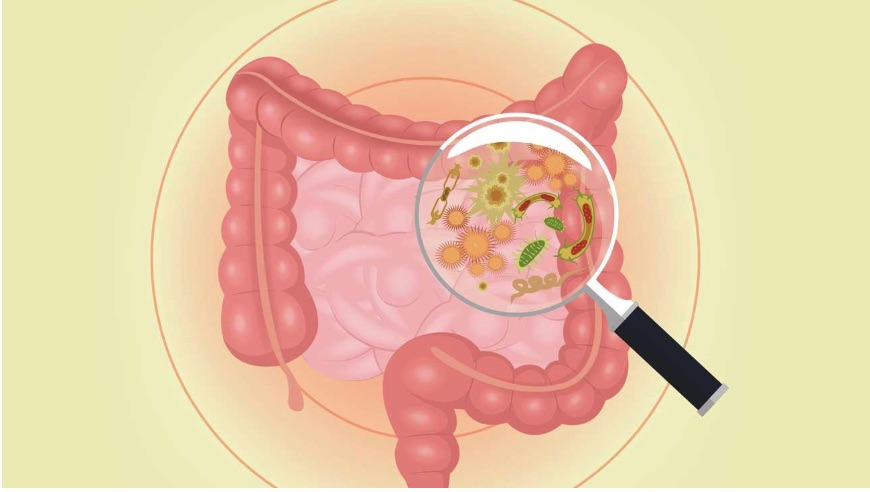

Gut Bacteria: The Future of Weight Loss?
Maria Silva Gomez
Your intestines have the same surface area as a tennis court and are home to trillions of bacteria. Researchers have found that these tiny denizens can adjust the ways in which human bodies store fat, control blood glucose levels, and respond to hormones. Like any ecosystem, increased diversity is a sign of good health. According the Jeffrey Gordon of Washington University, lean individuals have higher bacterial diversity than obese individuals, and an increased amount of Bacteroidetes (bacteria that break down plant starches and fibers).
With the obesity rate among American adults at 35 percent, regaining health is vital for the prosperity of the country. Dr. Gordon and his colleges conducted an experiment where two genetically identical mice were brought up in a sterile environment. Then, one’s gut was populated with microbiota from an obese, human twin, and the other with microbiota from the lean twin. Although both mice ate the same amount of food, and were fed the same diet, the mouse with the “obese” microbiota became fat while his counterpart remained slim. A second experiment was conducted where both mice lived together. In this case, both mice stayed lean—but why? Further inspection of the mouse populated with the “obese” microbiota found “lean” microbes in it’s gut; most likely attained by consuming his roommate’s poop.
Gut bacteria are kind of like humans in the sense that each one has a specific role to play. In a less diverse environment many “duties” go unfilled, resulting in a lack of maintenance of metabolism and weight. For example, in Gordon’s obese mice there was an increased amount of chemicals in the blood, such as branched amino acids and acylcarnitines, that are present in high levels in people suffering from obesity and Type II diabetes.
Developing a diverse community of gut bacteria from a young age is integral to our health, and maintaining a normal weight. Children delivered through cesarean section, and babies fed formula are at a higher risk for diabetes, obesity, and autoimmune diseases—why? Well, scientists from the University of Colorado Boulder and N.Y.U found that infants who are vaginally delivered, and breast-fed swallow beneficial bacteria. Therefore, those who aren't vaginally born or breast fed have less diverse bacteria, and thus are susceptible to those types of illnesses.
Does this mean you should start chugging kombucha by the gallons, and eating kimchi or yogurt at every meal? While eating a healthy, balanced diet, and exercising regularly are a great start to regaining a healthy weight, they alone may not be able to cure extreme obesity. Current studies are looking into the integration of beneficial bacteria into foods, and finding bacteria related to leanness to design personalized treatments. Until the latter are fully developed try reducing processed sugars, and eating some traditional fermented foods to strengthen your intestinal forest.